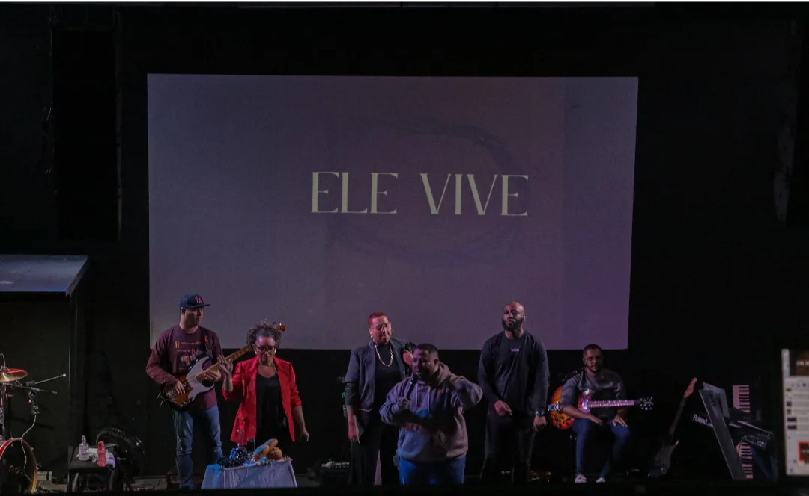

Resgatar
Alcançar pessoas com o amor de Cristo, acolhendo histórias com graça e dignidade.
RMinistério Mintre Guarulhos, SP
Uma igreja negra, bíblica e viva — onde fé, cultura e comunidade se encontram em Cristo.
Tem um lugar
esperando por você.
Quem somos
Uma casa de liberdade
Uma comunidade nascida da fé, da resistência e do desejo de servir a Deus em comunidade.
Texto provisório sobre a fundação da Mintre, suas primeiras reuniões e o caminho percorrido até se tornar a igreja que existe hoje em Guarulhos. Este conteúdo será substituído pela história oficial.
Resgatar, restaurar e ensinar — anunciando o Evangelho, cuidando de pessoas e formando discípulos.
Vivemos a missão por meio da Palavra, da oração, do louvor, do acolhimento e de uma presença ativa na comunidade.
Nossa missão
Nosso nome carrega aquilo que vivemos todos os dias.
Alcançar pessoas com o amor de Cristo, acolhendo histórias com graça e dignidade.
RCaminhar juntos em direção à cura, à reconciliação e a uma vida plena em comunidade.
RFormar discípulos firmados na Palavra, preparados para viver e compartilhar sua fé.
ENossa expressão
Celebramos quem somos por inteiro. Louvor, Palavra, juventude e cultura fazem parte da mesma história.

“A paz de Deus excede todo entendimento.”Filipenses 4:6–7
Agenda
Escolha um momento e veja o que acontece em cada encontro da Mintre.
Um momento para fortalecer seu conhecimento, aprofundar a fé e crescer na caminhada com Deus por meio da Palavra.
Nosso principal culto, com louvor, oração e reflexão na Palavra de Deus para toda a família viver um tempo de comunhão e renovação.
Um encontro mais direto, com louvor, oração e reflexão bíblica, para começar a semana alinhado com Deus e fortalecido na fé.
Um momento de reverência e comunhão para celebrar o corpo de Cristo e recordar, em unidade, a obra de Jesus por nós.
Nossa liderança
Pastor principal
Um pastor dedicado ao ensino, à formação de pessoas e à construção de uma comunidade negra, bíblica e viva.
Informações sobre formação acadêmica e teológica.
Experiência, estudos e áreas de atuação ministerial.
Espaço para apresentar livros, artigos e outras publicações.
Como sua liderança contribui para a transformação de vidas e do território.
“Cada canção, cada palavra, cada detalhe — tudo preparado para Ele.”
Venha nos visitar
Na Mintre, você encontra uma comunidade acolhedora, viva e pronta para caminhar com você.
Consulte a agenda de encontros para escolher o melhor momento da sua visita.
Quer falar com a gente antes da sua visita?
Fale com a Mintre ↗